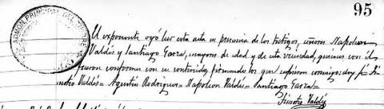

Antonio García Carrillo
Gobernador de Coahuila · 1875–1879
Abrir fichaSefarad-mx · Archivo
Cada ficha enlaza a las demás. Retrato cuando hay imagen de archivo.

Gobernador de Coahuila · 1875–1879
Abrir ficha
Donante de Buenavista · UAAAN
Abrir ficha
Lampazos · padre de García Naranjo
Abrir ficha
Huachichil y Galeana · Franck Gaona
Abrir fichaMédico · Ateneo Fuente · 1854–1938
Abrir fichaGobernador · fundador de Torreón
Abrir fichaPatos, 13 de septiembre de 1872
Abrir ficha